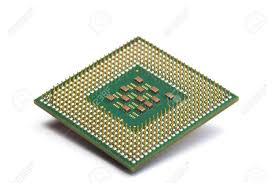
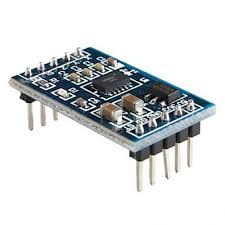

|
A processor, or "microprocessor," is a small chip that resides in computers and other electronic devices.
Its basic job is to receive input and provide the appropriate output.
While this may seem like a simple task, modern processors can handle trillions of calculations per second.

|
accelerometer sensor can be used to measure the acceleration exerted upon the sensor.
Usually the acceleration is given in two or three axis-vector components that make up the sum/net acceleration.
Accelerometers have quite a few uses.
You can probably think of a few already—glass breakage detector, video game remote controls, or even electronic bubble levels for when you are trying to hang a picture frame on the wall.

|
|
A passive infrared sensor is an electronic sensor that measures infrared light radiating from objects in its field of view.
They are most often used in PIR-based motion detectors.
PIR sensors are commonly used in security alarms and automatic lighting applications.

|
Ultrasonic transducers and ultrasonic sensors are devices that generate or sense ultrasound energy.
They can be divided into three broad categories: transmitters, receivers and transceivers.

|